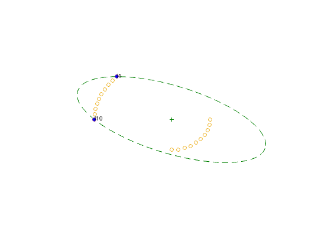
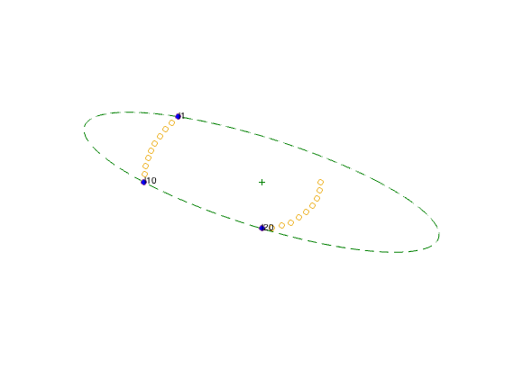
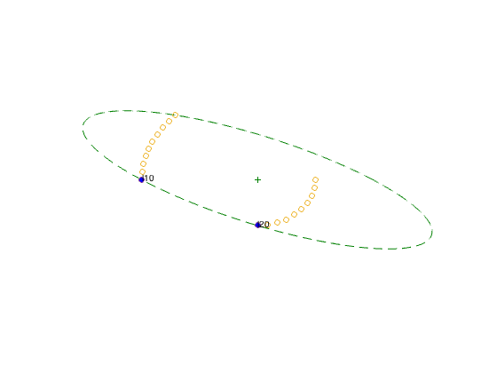
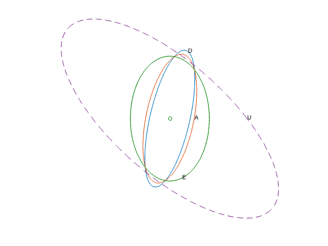

% Boyd & Vandenberghe, "Convex Optimization" % Original version by Lieven Vandenberghe % Updated for CVX by Almir Mutapcic - Jan 2006 % (a figure is generated) % % This is an example of D-optimal, A-optimal, and E-optimal % experiment designs. % problem data m = 10; angles1 = linspace(3*pi/4,pi,m); angles2 = linspace(0,-pi/2,m); % sensor positions V = [3.0*[cos(angles1); sin(angles1)], ... 1.5*[cos(angles2); sin(angles2)]]; p = size(V,2); n = 2; noangles = 5000; % D-optimal design % % maximize log det V*diag(lambda)*V' % subject to sum(lambda)=1, lambda >=0 % % setup the problem and solve it cvx_begin variable lambda(p) maximize ( det_rootn( V*diag(lambda)*V' ) ) subject to sum(lambda) == 1; lambda >= 0; cvx_end lambdaD = lambda; % save the solution for confidence ellipsoids % plot results figure(1) % draw ellipsoid v'*W*v <= 2 W = inv(V*diag(lambda)*V'); angles = linspace(0,2*pi,noangles); R = chol(W); % W = R'*R ellipsoid = sqrt(2)*(R\[cos(angles); sin(angles)]); d = plot(ellipsoid(1,:), ellipsoid(2,:), '--', 0,0,'+'); set(d, 'Color', [0 0.5 0]); set(d(2),'MarkerFaceColor',[0 0.5 0]); hold on; dot=plot(V(1,:),V(2,:),'o'); ind = find(lambda > 0.001); dots = plot(V(1,ind),V(2,ind),'o'); set(dots,'MarkerFaceColor','blue'); % print out nonzero lambda disp('Nonzero lambda values for D design:'); for i=1:length(ind) text(V(1,ind(i)),V(2,ind(i)), ['l',int2str(ind(i))]); disp(['lambda(',int2str(ind(i)),') = ', num2str(lambda(ind(i)))]); end; %axis([-4.5 4.5 -4.5 4.5]) axis([-5 5 -5 5]) set(gca,'Xtick',[]); set(gca,'Ytick',[]); hold off, axis off % print -deps Ddesign.eps % A-optimal design % % minimize Trace (sum_i lambdai*vi*vi')^{-1} % subject to lambda >= 0, 1'*lambda = 1 % % SDP formulation e = eye(2,2); cvx_begin sdp variables lambda(p) u(n) minimize ( sum(u) ) subject to for k = 1:n [ V*diag(lambda)*V' e(:,k); e(k,:) u(k) ] >= 0; end sum(lambda) == 1; lambda >= 0; cvx_end lambdaA = lambda; % save the solution for confidence ellipsoids % plot results figure(2) % draw ellipsoid v'*W*v <= mu W = inv(V*diag(lambda)*V')^2; mu = diag(V'*W*V); mu = mean(mu(ind)); angles = linspace(0,2*pi,noangles); R = chol(W); % W = R'*R ellipsoid = sqrt(mu)*(R\[cos(angles); sin(angles)]); d = plot(ellipsoid(1,:), ellipsoid(2,:), '--',0,0,'+'); set(d, 'Color', [0 0.5 0]); set(d(2), 'MarkerFaceColor', [0 0.5 0]); hold on dot = plot(V(1,:),V(2,:),'o'); ind = find(lambda > 0.001); dots = plot(V(1,ind),V(2,ind),'o'); set(dots,'MarkerFaceColor','blue'); disp('Nonzero lambda values for A design:'); for i=1:length(ind) text(V(1,ind(i)),V(2,ind(i)), ['l',int2str(ind(i))]); disp(['lambda(',int2str(ind(i)),') = ', num2str(lambda(ind(i)))]); end; %axis([-4.5 4.5 -4.5 4.5]) axis([-5 5 -5 5]) set(gca,'Xtick',[]); set(gca,'Ytick',[]); axis off, hold off % print -deps Adesign.eps % E-optimal design % % minimize w % subject to sum_i lambda_i*vi*vi' >= w*I % lambda >= 0, 1'*lambda = 1; % cvx_begin sdp variables t lambda(p) maximize ( t ) subject to V*diag(lambda)*V' >= t*eye(n,n); sum(lambda) == 1; lambda >= 0; cvx_end lambdaE = lambda; % save the solution for confidence ellipsoids figure(3) % draw ellipsoid v'*W*v <= mu mu = diag(V'*W*V); mu = mean(mu(ind)); angles = linspace(0,2*pi,noangles); R = chol(W); % W = R'*R ellipsoid = sqrt(mu)*(R\[cos(angles); sin(angles)]); d = plot(ellipsoid(1,:), ellipsoid(2,:), '--', 0, 0, '+'); set(d, 'Color', [0 0.5 0]); set(d(2), 'MarkerFaceColor', [0 0.5 0]); hold on dot = plot(V(1,:),V(2,:),'o'); lambda = lambda(1:p); ind = find(lambda > 0.001); dots = plot(V(1,ind),V(2,ind),'o'); set(dots,'MarkerFaceColor','blue'); disp('Nonzero lambda values for E design:'); for i=1:length(ind) text(V(1,ind(i)),V(2,ind(i)), ['l',int2str(ind(i))]); disp(['lambda(',int2str(ind(i)),') = ', num2str(lambda(ind(i)))]); end; %axis([-4.5 4.5 -4.5 4.5]) axis([-5 5 -5 5]) set(gca,'Xtick',[]); set(gca,'Ytick',[]); axis off, hold off % print -deps Edesign.eps % confidence ellipsoids eta = 6.2514; % chi2inv(.9,3) value (command available in stat toolbox) % draw 90 percent confidence ellipsoid for D design W = V*diag(lambdaD)*V'; angles = linspace(0,2*pi,noangles); R = chol(W); % W = R'*R ellipsoid = sqrt(eta)*(R\[cos(angles); sin(angles)]); figure(4) plot(0,0,'ok',ellipsoid(1,:), ellipsoid(2,:), '-'); text(ellipsoid(1,1100),ellipsoid(2,1100),'D'); hold on % draw 90 percent confidence ellipsoid for A design W = V*diag(lambdaA)*V'; angles = linspace(0,2*pi,noangles); R = chol(W); % W = R'*R ellipsoid = sqrt(eta)*(R\[cos(angles); sin(angles)]); plot(0,0,'ok',ellipsoid(1,:), ellipsoid(2,:), '-'); text(ellipsoid(1,1),ellipsoid(2,1),'A'); % draw 90 percent confidence ellipsoid for E design W = V*diag(lambdaE)*V'; angles = linspace(0,2*pi,noangles); R = chol(W); % W = R'*R ellipsoid = sqrt(eta)*(R\[cos(angles); sin(angles)]); d=plot(0,0,'ok',ellipsoid(1,:), ellipsoid(2,:), '-'); set(d,'Color',[0 0.5 0]); text(ellipsoid(1,4000),ellipsoid(2,4000),'E'); % draw 90 percent confidence ellipsoid for uniform design W_u = inv(V*V'/p); R = chol(W_u); % W = R'*R ellipsoid_u = sqrt(eta)*(R\[cos(angles); sin(angles)]); plot(ellipsoid_u(1,:), ellipsoid_u(2,:), '--'); text(ellipsoid_u(1),ellipsoid_u(2),'U'); set(gca,'Xtick',[]); set(gca,'Ytick',[]); axis off % print -deps confidence.eps hold off
Calling SDPT3 4.0: 34 variables, 10 equality constraints ------------------------------------------------------------ num. of constraints = 10 dim. of sdp var = 6, num. of sdp blk = 2 dim. of linear var = 21 ******************************************************************* SDPT3: Infeasible path-following algorithms ******************************************************************* version predcorr gam expon scale_data HKM 1 0.000 1 0 it pstep dstep pinfeas dinfeas gap prim-obj dual-obj cputime ------------------------------------------------------------------- 0|0.000|0.000|4.8e+02|5.3e+01|5.8e+03| 1.000000e+01 0.000000e+00| 0:0:00| chol 1 1 1|0.911|0.847|4.3e+01|8.1e+00|6.0e+02| 8.948551e+00 -2.532080e+01| 0:0:00| chol 1 1 2|0.977|1.000|9.7e-01|1.0e-02|5.0e+01| 5.362109e+00 -3.451297e+01| 0:0:00| chol 1 1 3|0.987|0.882|1.2e-02|2.1e-03|6.3e+00|-1.337101e+00 -7.637285e+00| 0:0:00| chol 1 1 4|0.990|0.859|1.2e-04|2.8e-03|1.3e+00|-2.323773e+00 -3.623790e+00| 0:0:00| chol 1 1 5|1.000|1.000|2.6e-08|3.5e-05|5.3e-01|-2.953575e+00 -3.484704e+00| 0:0:00| chol 1 1 6|0.978|0.963|4.9e-09|2.3e-06|1.7e-02|-3.172853e+00 -3.190118e+00| 0:0:00| chol 1 1 7|0.983|0.985|7.2e-09|1.3e-07|2.7e-04|-3.181834e+00 -3.182106e+00| 0:0:00| chol 1 1 8|0.978|0.980|2.3e-08|4.1e-09|5.7e-06|-3.181977e+00 -3.181983e+00| 0:0:00| chol 1 1 9|1.000|0.996|2.0e-09|2.2e-09|3.2e-07|-3.181980e+00 -3.181981e+00| 0:0:00| chol 1 1 10|1.000|1.000|4.6e-11|1.0e-10|1.3e-08|-3.181981e+00 -3.181981e+00| 0:0:00| stop: max(relative gap, infeasibilities) < 1.49e-08 ------------------------------------------------------------------- number of iterations = 10 primal objective value = -3.18198051e+00 dual objective value = -3.18198052e+00 gap := trace(XZ) = 1.27e-08 relative gap = 1.73e-09 actual relative gap = 1.56e-09 rel. primal infeas (scaled problem) = 4.63e-11 rel. dual " " " = 1.02e-10 rel. primal infeas (unscaled problem) = 0.00e+00 rel. dual " " " = 0.00e+00 norm(X), norm(y), norm(Z) = 1.7e+01, 4.3e+00, 7.9e+00 norm(A), norm(b), norm(C) = 2.9e+01, 2.0e+00, 2.2e+00 Total CPU time (secs) = 0.19 CPU time per iteration = 0.02 termination code = 0 DIMACS: 4.6e-11 0.0e+00 1.1e-10 0.0e+00 1.6e-09 1.7e-09 ------------------------------------------------------------------- ------------------------------------------------------------ Status: Solved Optimal value (cvx_optval): +3.18198 Nonzero lambda values for D design: lambda(1) = 0.5 lambda(10) = 0.5 Calling SDPT3 4.0: 32 variables, 11 equality constraints ------------------------------------------------------------ num. of constraints = 11 dim. of sdp var = 6, num. of sdp blk = 2 dim. of linear var = 20 ******************************************************************* SDPT3: Infeasible path-following algorithms ******************************************************************* version predcorr gam expon scale_data HKM 1 0.000 1 0 it pstep dstep pinfeas dinfeas gap prim-obj dual-obj cputime ------------------------------------------------------------------- 0|0.000|0.000|4.9e+02|4.7e+01|5.6e+03| 2.000000e+01 0.000000e+00| 0:0:00| chol 1 1 1|0.926|0.999|3.6e+01|1.2e-01|4.2e+02| 1.663772e+01 -2.905847e+01| 0:0:00| chol 1 1 2|0.950|1.000|1.8e+00|1.0e-02|4.1e+01| 1.545943e+00 -2.335057e+01| 0:0:00| chol 1 1 3|1.000|1.000|3.0e-07|1.0e-03|6.4e+00| 1.636822e+00 -4.755167e+00| 0:0:00| chol 1 1 4|0.917|0.879|1.2e-07|2.1e-04|8.7e-01| 1.221243e+00 3.518119e-01| 0:0:00| chol 1 1 5|1.000|1.000|2.4e-08|1.0e-05|5.9e-01| 1.101610e+00 5.104357e-01| 0:0:00| chol 1 1 6|0.973|0.976|2.4e-09|1.2e-06|9.8e-02| 9.168349e-01 8.188437e-01| 0:0:00| chol 1 1 7|1.000|1.000|1.7e-09|1.0e-07|4.1e-02| 8.744063e-01 8.336361e-01| 0:0:00| chol 1 1 8|0.971|0.970|8.9e-10|1.3e-08|1.5e-03| 8.505205e-01 8.490159e-01| 0:0:00| chol 1 1 9|0.988|0.986|3.2e-10|1.3e-09|1.9e-05| 8.495403e-01 8.495208e-01| 0:0:00| chol 1 1 10|0.999|0.997|2.4e-13|6.9e-11|3.3e-07| 8.495281e-01 8.495278e-01| 0:0:00| chol 1 1 11|1.000|1.000|2.4e-11|1.0e-12|1.1e-08| 8.495279e-01 8.495279e-01| 0:0:00| stop: max(relative gap, infeasibilities) < 1.49e-08 ------------------------------------------------------------------- number of iterations = 11 primal objective value = 8.49527931e-01 dual objective value = 8.49527921e-01 gap := trace(XZ) = 1.08e-08 relative gap = 3.99e-09 actual relative gap = 3.98e-09 rel. primal infeas (scaled problem) = 2.36e-11 rel. dual " " " = 1.00e-12 rel. primal infeas (unscaled problem) = 0.00e+00 rel. dual " " " = 0.00e+00 norm(X), norm(y), norm(Z) = 8.1e+00, 1.7e+00, 2.8e+00 norm(A), norm(b), norm(C) = 4.0e+01, 2.7e+00, 2.4e+00 Total CPU time (secs) = 0.19 CPU time per iteration = 0.02 termination code = 0 DIMACS: 3.2e-11 0.0e+00 1.2e-12 0.0e+00 4.0e-09 4.0e-09 ------------------------------------------------------------------- ------------------------------------------------------------ Status: Solved Optimal value (cvx_optval): +0.849528 Nonzero lambda values for A design: lambda(1) = 0.2966 lambda(10) = 0.37797 lambda(20) = 0.32543 Calling SDPT3 4.0: 23 variables, 3 equality constraints ------------------------------------------------------------ num. of constraints = 3 dim. of sdp var = 2, num. of sdp blk = 1 dim. of linear var = 20 ******************************************************************* SDPT3: Infeasible path-following algorithms ******************************************************************* version predcorr gam expon scale_data HKM 1 0.000 1 0 it pstep dstep pinfeas dinfeas gap prim-obj dual-obj cputime ------------------------------------------------------------------- 0|0.000|0.000|3.4e+02|5.3e+00|5.2e+03|-8.321762e+02 0.000000e+00| 0:0:00| chol 1 1 1|0.987|0.998|4.4e+00|3.1e-02|9.8e+01|-3.661832e+00 -2.519810e+01| 0:0:00| chol 1 1 2|1.000|1.000|7.7e-07|1.9e-03|1.3e+01|-5.769039e-01 -1.375481e+01| 0:0:00| chol 1 1 3|1.000|0.900|1.8e-07|3.6e-04|1.3e+00|-7.288098e-01 -2.061763e+00| 0:0:00| chol 1 1 4|0.763|1.000|3.2e-08|1.9e-05|9.0e-01|-1.574210e+00 -2.470832e+00| 0:0:00| chol 1 1 5|1.000|0.948|1.3e-09|2.8e-06|6.7e-02|-1.752692e+00 -1.819600e+00| 0:0:00| chol 1 1 6|0.982|0.984|2.5e-10|2.3e-07|1.2e-03|-1.799172e+00 -1.800349e+00| 0:0:00| chol 1 1 7|0.989|0.989|8.5e-11|2.1e-08|1.3e-05|-1.799991e+00 -1.800004e+00| 0:0:00| chol 1 1 8|0.993|0.991|2.8e-09|2.1e-10|2.4e-07|-1.800000e+00 -1.800000e+00| 0:0:00| chol 1 1 9|0.995|0.992|1.3e-09|2.7e-11|4.0e-09|-1.800000e+00 -1.800000e+00| 0:0:00| stop: max(relative gap, infeasibilities) < 1.49e-08 ------------------------------------------------------------------- number of iterations = 9 primal objective value = -1.79999999e+00 dual objective value = -1.80000000e+00 gap := trace(XZ) = 3.99e-09 relative gap = 8.67e-10 actual relative gap = 1.23e-09 rel. primal infeas (scaled problem) = 1.27e-09 rel. dual " " " = 2.70e-11 rel. primal infeas (unscaled problem) = 0.00e+00 rel. dual " " " = 0.00e+00 norm(X), norm(y), norm(Z) = 8.2e-01, 2.1e+00, 5.9e+00 norm(A), norm(b), norm(C) = 2.5e+01, 2.0e+00, 2.5e+01 Total CPU time (secs) = 0.13 CPU time per iteration = 0.01 termination code = 0 DIMACS: 1.3e-09 0.0e+00 6.7e-11 0.0e+00 1.2e-09 8.7e-10 ------------------------------------------------------------------- ------------------------------------------------------------ Status: Solved Optimal value (cvx_optval): +1.8 Nonzero lambda values for E design: lambda(10) = 0.2 lambda(20) = 0.8
   